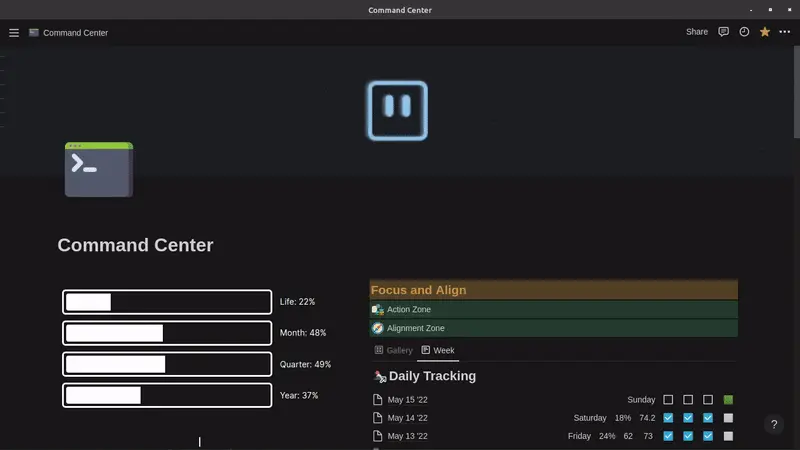
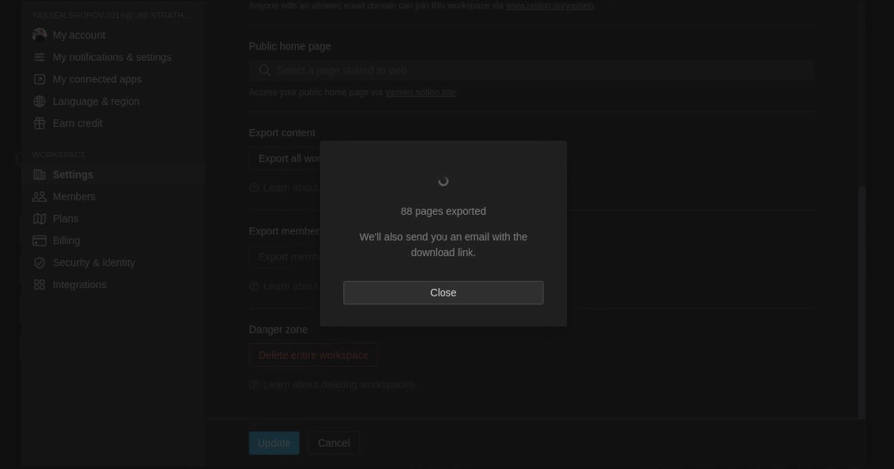

Notion - how to make it run faster?
July 3, 2022

Notion is currently one of the most popular productivity apps on the market. Its versatility and customization features make it the favourite app for business owners, managers, solo entrepreneurs and content creators like myself.
It allows you to combine the functionality of databases, notes, workspaces, Kanban boards, galleries and much more. All of this, combined with the additional feat of autosaving to cloud storage make it a powerful player in the productivity sphere.
However, with all these extra functions comes a heavy price to pay - and that is page speed.
It's become a running joke among Notion users that the fans of our computers go off every time the app is launched. Whether this is due to inefficient programming (since Notion's userbase grew exponentially in recent years) or whether it's simply too much to ask for - Notion does have a speed lag that sometimes messes up the user experience.
In this article, I will go into several ways in which one can increase the page load speed of their workspace. Some of these tricks are straightforward and will reduce Notion's computational load, while others are a bit more conceptual. Whichever you pick, here are some ways to make your Notion workspace run a lot faster.
Reduce the sizing of your images
Maybe it hasn't occurred to you if you don't use Notion too often, but one of the biggest impacts to speed is the sizing of the images on the page.
This includes the cover image, the logo, and any other image and visual elements on the page itself.
Many people, including myself, decide to populate our pages with aesthetically pleasing gifs and images. However, this makes Notion take much longer to load. You can see the page that I used to have as the main page for my Notion workspace - it has a gif as a cover and a few widgets. From my experience, I can tell you that it took 10+ seconds to load on a relatively good Internet speed, and then every next interaction with the page (like click or drag) took a few extra seconds here and there.
The problem was easily resolved when I took the time to manage the image files. When I chose the gif or image for the cover, I went through an online converter and converted it to a smaller, more compressed image format - like JPG or WEBP. The same can be done for all logos, and then all other images throughout your workspace.
Be cautious with widgets
Ah, widgets.
The glorious widgets we add to customize our Notion workspaces in all sorts of ways. These widgets include counters, progress bars, timelines, clocks, as you saw above, and many more.
The widgets themselves are a great addition to the workspace. The problem comes with their usual way of functioning. Since Notion itself is web-based, it constantly makes data requests to and from the web. This means that, with widgets such as the clock one, it needs to make an HTTP request to a browser every second to generate and preview the right content.
Now, I'm not saying that widgets are forbidden for fast workspaces, but their presence is still carrying a rather big load to Notion's speed. So what I would do is use them sparingly and only on specific pages when needed.
Archive and delete often
At one point, I decided to do a "quick" backup of my Notion workspace. If you are wondering, you can find out how to do it yourself here.
Amazingly, the total number of pages on my personal Notion workspace was 8,000+! And that's not counting the individual page sizes which varied across the workspace. Yes, the bulk of those came from my to-do list, which has been expanding incrementally over time.
This means that there is a simple trick you can do to make your Notion workspace go a bit faster. You can go over your to-do list database, for example, and routinely archive or delete any old content you feel like you don't need anymore. For example, some of my earliest to-do list entries allude to lectures and assignments that are long behind me, and I no longer need to be reminded of them.
Doing this cleanup routinely ensures you keep a "healhty" Notion workspace and betters its performance significantly.
Use a tree structure
The Tree Folder Structure is simple, and you have probably been taught about it in your first IT classes in school. In essense, it comes down to starting off with 1 main root and then branching off to multiple main folders. Let's follow the example I personally use in my workspace to get a better view.
To start off, the main page in my workspace is my Command Centre. This is the first page I see when I open the app and all the other pages are inside of it, directly or indirectly. You may wonder whether it's not actually a cluttered mess, but you will be surprised.
The next main step is to configure the main branches. Inside the Command Centre I have created different databases, the main one of which is my Pillars database. Each Pillar represents an important aspect of my life - Health, Business, Education, Social. Once we go into the Education pillar, I can find all the data for my University courses, extracurricular activities, courses, projects, and so on. It all goes under the hood of the education pillar.
Having the folder structure set up in this specific way makes the navigation process easier for two reasons.
When I'm in that Anatomy lecture, I know that all the folders and pages I'll need are in the Education pillar, so I don't have to remember their individual "breadcrumbs".
When 2 pages are closely related in Notion, it becomes faster to search them up. The loading speed is directly proportional to their proximity in folders.
And those were the few tips I have proven to work in increasing your Notion workspace's operating speed. You may not notice the difference immediately, but I am sure that those habits and quick fixes will build up to revolutionize your productivity.